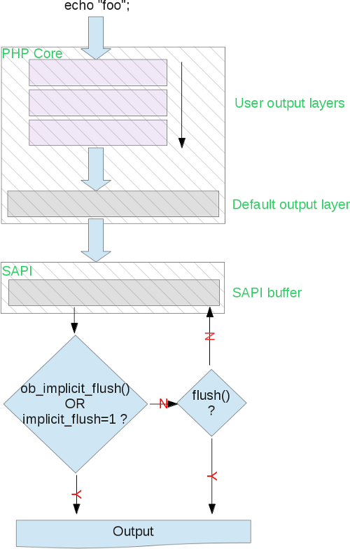

Dec 19th, 2014
First words#
Everybody is aware of the "output buffering" layer in PHP. This blog post is about how it works, how it's been implemented in PHP source code, and how to interact with it from PHP. This layer is not complex, but often misunderstood, or at least, not fully mastered by PHP developers. Let's try to fix that together. We'll talk about PHP >=5.4, should you know that many things have changed starting 5.4 about the OB layer, in fact, it has been completely rewritten and broke compatibility in some ways with PHP 5.3 (documented).
What is the output buffer ?#
PHP's output stream contains bytes, usually text that the developer asks PHP to display, often using echo statements or printf().
The first thing you should know is that any function outputing something will use the output buffer, this, from PHP land. When you
live into the extension land, you may access functions that writes directly into SAPI preventing any OB layer above.
The C API is documented into main/php_output.h and as usual gives us many informations,
such as the default buffer size f.e.
The second thing to know is that the output buffer layer is one layer among others (there is not just one solo layer buffering your output). And the last thing to remember is that the output buffer layer behaves differently in accordance with the SAPI you are using (web or cli). Let's first draw the main picture that explains everything

Like you can see, we can distinguish between 3 logical layers of buffer for the output management into PHP. 2 of them belong to the famous "output buffering", and one last lives into the SAPI. Those are the PHP layers, when the flow of output bytes leaves PHP to enter the bottom layer in the main architecture, here again, buffers may appear (terminal buffer, fast-cgi buffer, web server buffer, OS buffers, TCP/IP stack buffers and we'll stop here). Don't forget this, beside the fact that we'll only talk about the PHP part in this article, many other pieces of software in the whole stack may retain information before passing them to the below layer before hitting the end user.
One particular note about the CLI SAPI, so that's done. CLI disables any default PHP output buffer, by forcing the INI setting output_buffering to 0. So, by default, until you play manually with ob_() functions, in CLI, when you output something, it directly hits the SAPI layer. Moreover, in CLI, implicit_flush is also hardcoded to the value 1. Implicit_flush setting is always misunderstood, in fact the source code is really eloquent about it : when implicit_flush is turned on, the SAPI layer buffer is asked to be flushed anytime it is written to. To conclude : anytime you write any output with the CLI SAPI, it will be asked to be immediately thrown to the bottom layer, which is the stdout pipe beeing write()en and then fflush()ed. Easy.
Default PHP output buffer layer#
So far so good, if you use a SAPI different from CLI, for example PHP-FPM, you'll be able to play with those 3 buffer-related INI settings :
- output_buffering
- implicit_flush
- output_handler
Before understanding those, you should note that using ini_set() with them will have no effect, as their effect is analyzed at PHP startup, that is before
PHP may run any script. So when it meets an ini_set() about one of those 3 settings, it effectively changes the value, but this new value won't be used anywhere
as it is too late : the output buffer layer is already started and active.
Change those by editing php.ini or using the -d switch to the PHP binary.
Ok, so by default, the php.ini shipped with the actual PHP distribution gives output_buffering the value of "4096" (bytes). If you don't use any php.ini (or start PHP with the -n switch), the default will be "0", aka disabled. If you hardcode the value to "On", then the default output buffer size will be used (16Kb). As you may have guessed, having a buffer for any output, in web environment, is a good thing for performance. The default 4Kb is a good setting, this means you may write up to 4096 ASCII characters until PHP actually communicates with the below SAPI layer. And in a web context, telling a socket to send bytes on a byte-by-byte basis is not very nice in term of performance. It is way better for your server machine to send the content all at once, or big-chunks-by-big-chunks. The less often the layers communicate, the better for performance. You should always keep an output buffer. PHP will send it at the end of the request, you don't have to do anything.
You already know about implicit_flush as we talked about it in the previous chapter regarding CLI. For any other SAPI, implicit flush is by default
set to off, which is a good value, as flushing the SAPI just after having written into it is probably not the behavior you expect. For the FastCGI
protocol, flushing is about ending and sending a FastCGI packet after every write, it may however be better to fullfill the FastCGI buffers before sending
FastCGI packets.
If you want to manually flush the SAPI buffers, use PHP's flush() function.
If you want it to be flushed after any write, use implicit_flush INI setting or call the PHP function ob_implicit_flush() once.
The output_handler is a callback that may be applied to the content of the buffer, before it gets flushed. There exists many callbacks, provided by PHP extensions (user may also write callbacks, we'll talk about this in the next chapter).
- ob_gzhandler : output compression using ext/zlib
- mb_output_handler : character encoding translation using ext/mbstring
- ob_iconv_handler : character encoding translation using ext/iconv
- ob_tidyhandler : HTML output tidying using ext/tidy
- ob_[inflate/deflate]_handler : output compression using ext/http
- ob_etaghandler : HTTP etag automatic generation using ext/http
The callback you'll choose (only one possible) will be sent the buffer content and will perform some transformations about it, something which is very nice. Remember that if you want to be able to see anything that PHP is to write back to the webserver and then to the user, use an output buffer callback, that's the way to do such things. Also remember that by "output" , we mean any headers and body. HTTP headers are also part of the OB layer.
Headers and body#
At the time you use an output buffer (weither a user one, or the default PHP one), you may send HTTP headers and content the way you want.
You know that any protocol require to send headers before body (thus the term "header"), but when you use an ouput buffer layer, PHP will take care of
this for you.
Any PHP function playing with output headers (header(), setcookie(), session_start()) will in fact use the internal
sapi_header_op() function which just fills in the headers buffer.
When you then write output, using say printf(), it writes into the output buffer (assuming one).
When the output buffer is to be sent, PHP starts sending the headers first, and then the body. PHP takes care of everything for you.
If you dont like this behavior, you have no other choice than disabling any output buffer layer.
User output buffers#
Let's show some examples of how this works and what you can do. Remember that if you want to play with the dafult PHP output buffer layer, you may then not used CLI, as it disables such a layer. Here is an example playing with PHP default output buffer layer, using PHP internal webserver SAPI:
/* launched via php -doutput_buffering=32 -dimplicit_flush=1 -S127.0.0.1:8080 -t/var/www */
echo str_repeat('a', 31);
sleep(3);
echo 'b';
sleep(3);
echo 'c';So we start PHP with a default output buffering layer of 32 bytes, and we immediately write 31 bytes to it before sleeping. Here, as expected, nothing is sent yet, blank screen. Then the sleep finishes and we write one more byte, fulfilling the buffer wich then immediately flushes itself into the SAPI layer buffer, itself flushing immediately to the output, as we put implicit_flush to 1. The string 'aaaaaaaaaa{31times}b' then appears on the screen, and we start another sleep. After this last sleep, the empty 31-byte-size buffer is filled-in with only one byte, but PHP then ends, and flushes back this buffer immediately. The 'c' character appears.
We just showed how the default PHP buffer works, without calling any ob related functions yet. Keep in mind that this default buffer is here, it is present (in non-CLI mode) and you may not forget about it.
We may now start user buffers, calling ob_start(), and we may stack as many buffers as we want (until we run out of memory).
Every buffer will stack onto the preceding one, and will flush itself into the immediately next one, eventually fulfilling it and make it overflow, etc...
ob_start(function($ctc) { static $a = 0; return $a++ . '- ' . $ctc . "\n";}, 10);
ob_start(function($ctc) { return ucfirst($ctc); }, 3);
echo "fo";
sleep(2);
echo 'o';
sleep(2);
echo "barbazz";
sleep(2);
echo "hello";
/* 0- FooBarbazz\n 1- Hello\n */Output buffering internals#
Since 5.4, the entire output buffering layer has been rewritten (by Michael Wallner). The code was a mess before, and many things were hard to do and buggy. Read on http://marc.info/?l=php-internals&m=114104110826804&w=2 for more informations. PHP 5.4 starts with a new code base, which is much more clean and designed, offers new features and has little breaks against 5.3. Nice !
One of the nicest feature added then is the possibility for extensions to declare their output buffer callback as conflicting with another one provided by another extension. Before that, it was impossible -when designing an extension playing with the output buffer- to fully master the impact knowing other extensions could declare callbacks as well.
Here is a quick-and-dirty little example showing how to register a callback that strtoupper() its content.
#ifdef HAVE_CONFIG_H
#include "config.h"
#endif
#include "php.h"
#include "php_ini.h"
#include "main/php_output.h"
#include "php_myext.h"
static int myext_output_handler(void **nothing, php_output_context *output_context)
{
char *dup = NULL;
dup = estrndup(output_context->in.data, output_context->in.used);
php_strtoupper(dup, output_context->in.used);
output_context->out.data = dup;
output_context->out.used = output_context->in.used;
output_context->out.free = 1;
return SUCCESS;
}
PHP_RINIT_FUNCTION(myext)
{
php_output_handler *handler;
handler = php_output_handler_create_internal("myext handler", sizeof("myext handler") -1, myext_output_handler, /* PHP_OUTPUT_HANDLER_DEFAULT_SIZE */ 128, PHP_OUTPUT_HANDLER_STDFLAGS);
php_output_handler_start(handler);
return SUCCESS;
}
zend_module_entry myext_module_entry = {
STANDARD_MODULE_HEADER,
"myext",
NULL, /* Function entries */
NULL,
NULL, /* Module shutdown */
PHP_RINIT(myext), /* Request init */
NULL, /* Request shutdown */
NULL, /* Module information */
"0.1", /* Replace with version number for your extension */
STANDARD_MODULE_PROPERTIES
};
#ifdef COMPILE_DL_MYEXT
ZEND_GET_MODULE(myext)
#endifGotchas#
The gotchas are mainly documented. Some are logical, some are hidden. The logical, obvious ones are that you should not call any buffer functions from whithin an output buffer callback, nor should you write some output from there.
The less obvious ones are that some PHP functions use internally the output buffer for themselves, stacking another buffer, filling it then flushing or returning it.
Examples of such functions are print_r(), highlight_file() and SoapServer::handle().
You should not use such functions from within an output buffer callback. The behavior may be undefined, or at least not what you'd expect.
Ending#
The output layer is a layer of nets, catching any output "leak" that may come from PHP, and saving it in a sized buffer. When the buffer is full, it is flushed (written) into the bottom layer if any, or at least into the bottom logical layer : the SAPI buffer. End users have control over the number of buffers, their size and the operation that may be permitted on each layer of buffer (cleanable, flushable or removable). This is very flexible and for example, allows library/framework designers to gain full control of their own output flow by catching it and treating it into a global buffer. By output, we suppose any output stream bytes and any output HTTP headers , PHP taking care of sending them in the right order.
The output buffer also provides by default one buffer, controlled by 3 INI settings, that is designed to prevent smalls regulars writes from hitting the SAPI layer too often, and thus the network too often, which is poor for performances. PHP extensions may also declare callbacks to be run on every buffer, for example to perform data compression, string substitution, HTTP headers management and many other things.